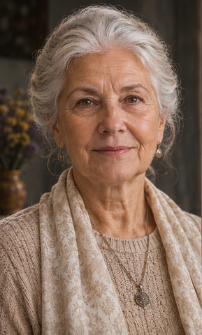

РАДА ЛОРДІВ
Лорд Алістер
Один із лордів Ради. Знаючий і гордий, схильний до зухвалих заперечень, але змушений дотримуватися волі Верховного.
Детальніше →ЛЮДИ РІЗНИХ СВІТІВ І ЧАСІВ
Їхні історії починаються в різних світах і в різні епохи, але поступово стають частинами однієї великої історії.
РАДА ЛОРДІВ
Один із лордів Ради. Знаючий і гордий, схильний до зухвалих заперечень, але змушений дотримуватися волі Верховного.
Детальніше →РАДА ЛОРДІВ
Сивий лорд з акуратною бородою. Пам'ятає стару війну з нульовиками та особисті втрати, яких зазнало його володіння.
Детальніше →РАДА ЛОРДІВ
Темноволосий лорд, який пам'ятає знищення своїх поселень під час старої війни з нульовиками. У його реакціях на минуле поєднуються біль і злість.
Детальніше →
РОЗРОБКА ТЕХНОЛОГІЙ · РОБОТОТЕХНІКА · ЗАХИСТ
Інженер і координатор розробок автономних платформ R-10 та R-17, мережевого керування роботами й інтеграції мобільних захисних систем.
Детальніше →ПЕРШИЙ ПЛАН
Генерал, який бере участь у координації військових та державних питань.
ХАРАКТЕРНИКИ
Характерниця, чия лінія проходить через ініціацію, навчання, медичне відновлення та подорож із Мольфаром.

ПІДЗЕМНІ МІСТА · МЕНТАЛЬНІ ЗДІБНОСТІ
Друг Артема й Влада. Допитливий і товариський; після порятунку з лабораторії поступово відкриває нове життя та вчиться самостійно розпоряджатися своїми винятковими ментальними здібностями.
Детальніше →ХАРАКТЕРНИКИ · ФІНЛЯНДІЯ
Фінський учень Мольфара. Спокійний і небагатослівний, опановує мислезв’язок та вчиться самостійно відкривати портали.
Детальніше →
ХАРАКТЕРНИКИ · КЕНІЯ
Учениця Мольфара з Кенії. Упевнена, рішуча й запальна; опановує мислезв’язок і навчається відкривати портали.
Детальніше →РОЗВІДКА
Характерник і керівник розвідувальної команди. Працює з кораблями, розвідкою Планів та небезпечними дослідженнями.
РОЗВІДКА
Технічна спеціалістка розвідувальної команди Евігіда, яка працює з даними сканування та системами корабля.
РОЗВІДКА
Пілот розвідувальної команди Евігіда. Бере участь у польотах та операціях на інших Планах.
ВІЙСЬКОВА ЛІНІЯ
Турецький генерал і партнер Олексія у військовій координації та обміні інформацією.
НУЛЬОВИЙ ПЛАН
Фахівець, залучений до виробництва та забезпечення масштабних програм, зокрема медичних капсул та енергетичних проєктів.

ПЕРШИЙ ПЛАН · ПРОРОЦТВА
Дружина діда Миколи, жінка з даром пророцтва. Її бачення майбутнього змінюються разом із подіями, а попередження про загибель людства стало одним із поштовхів до перших рішень героїв.
Детальніше →
ДРУГИЙ ПЛАН · КООРДИНАЦІЯ
Головний координатор Другого плану. Веде переговори між світами, узгоджує політичні й оборонні рішення та координує участь свого плану у спільній війні.
Детальніше →ВІЙСЬКОВА ЛІНІЯ
Командир роти на Першому плані. Спостерігає за підготовкою та переміщенням військ перед наступом.
ВІДДАЛЕНИЙ ПЛАН
Мешканець віддаленої планети, який живе там майже двісті років. Його історія показує, як Закон трьох днів обмежував можливість переселення.

НУЛЬОВИЙ ПЛАН · МЕДИЧНА ПІДГОТОВКА
Юнак із підземного міста Нульового плану. Спостережливий і практичний, швидко знаходить спільну мову з Артемом, Денисом і Владом; разом з Артемом виявляє хист до роботи з медичними капсулами.
Детальніше →ОРДЕН
Колишній учасник Корпорації, чиї знання про внутрішні коди, маршрути та приховані проєкти допомагають розслідуванню.
НЕВІДОМА ЛІНІЯ
Таємничий персонаж, пов'язаний із подіями останньої частини книги та окремою лінією дослідження.
РЯТУВАЛЬНА СЛУЖБА
Бригадир рятувальників Об’єднаного людства. Керує рятувальною групою та бере участь у складних евакуаційних операціях.
ІНФРАСТРУКТУРА
Електрик, який працює з відновленням електромережі та локальною інфраструктурою після ударів.
ВИБІРКА ПЕРСОНАЖІВ
До сторінки включено персонажів, які повторюються в актуальних двох частинах книги більше двох разів. Варіанти написання одного персонажа, зокрема Райен / Раєн та дід Микола / Миколай, об'єднано в одну картку. Окремо залишено персонажів із різними іменами або позивними, якщо в тексті вони виступають як окремі люди.
Список сформовано за текстом книги, а не за другорядними згадками про організації, підрозділи, техніку чи безіменних персонажів.